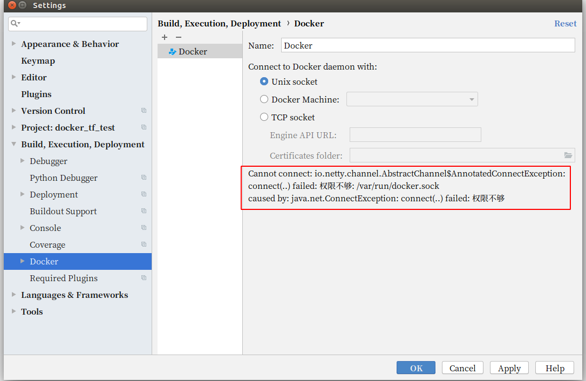
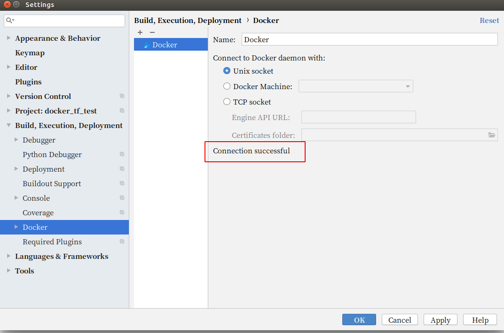

摘要

本文主要介绍Docker 安装结束后的全权限配置问题
- 一、解决终端运行每次需要运行root权限问题
porter@porter-Aspire:~$ docker images
Got permission denied while trying to connect to the Docker daemon socket at unix:///var/run/docker.sock: Get http://%2Fvar%2Frun%2Fdocker.sock/v1.39/images/json: dial unix /var/run/docker.sock: connect: permission denied
- 二、解决Pycharm中导入docker时提示权限问题

一、问题分析
以上两种问题的出现，都是因为没把当前的用户组加到 /var/run/docker.sock 执行组中去
解决办法
步骤一、检查docker.sock 的用户权限情况
ls -l /var/run/docker.sock
srw-rw---- 1 root docker 0 Aug 23 09:40 /var/run/docker.sock
步骤二、将当前用户组添加到docker的组中
sudo gpasswd -a ${USER} docker
cat /etc/group | grep ^docker
步骤三、重启docker
sudo service docker restart
步骤四、更新docker的用户和组
newgrp docker #更新用户组
步骤五、终端测试
可以发现可以不用root权限就可以操作docker相关的命令了
docker ps #测试docker命令是否可以使用sudo正常使用
二、 问题分析
导致问题二中的pycharm出问题的原因是因为file的读写权限的问题，我们只需要改下，出问题的文件的读写权限就可以了
问题的现象如下图
问题的解决方法如下
sudo chmod a+rw /var/run/docker.sock
然后再重新+一个Docker 看下效果如下
